Publications
* denotes equal contribution.
2026
-
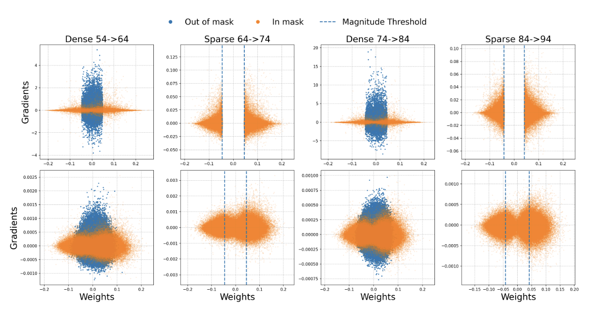
NeurIPS 2026 -
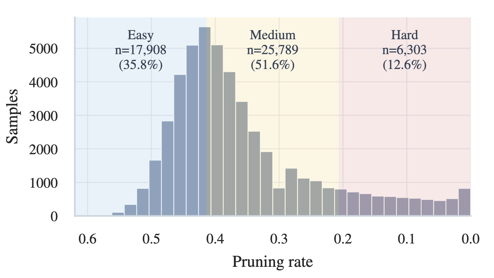
NeurIPS 2026 & MemFM Workshop at ICML 2026 -
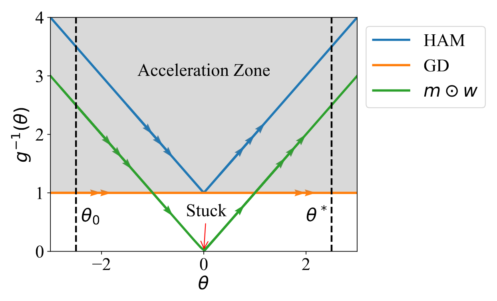
2025
-
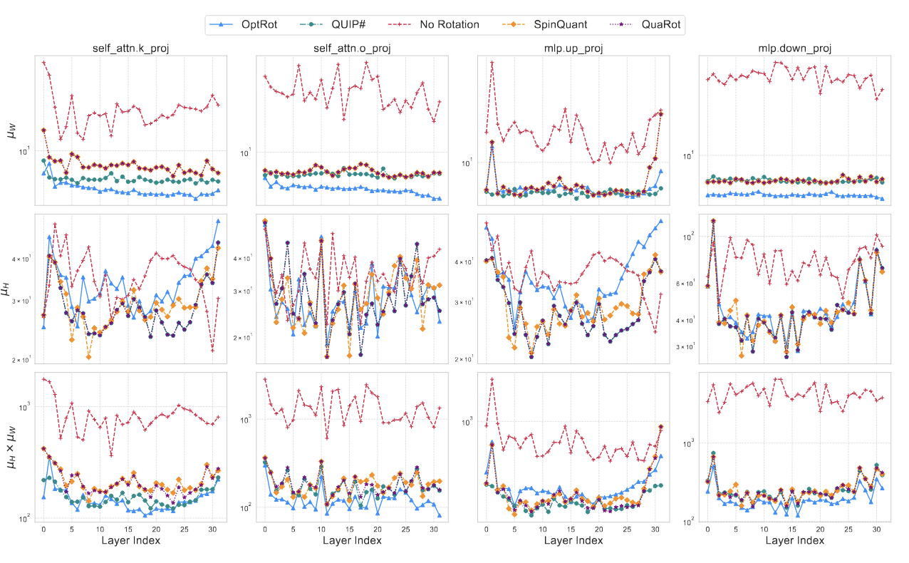
ML for Sys Workshop (NeurIPS 2025) -
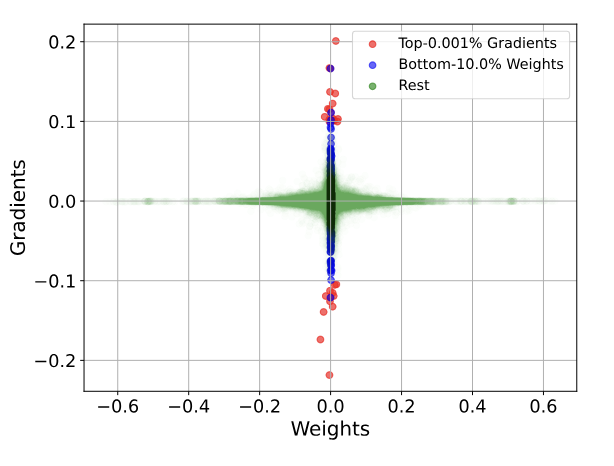
NeurIPS 2025 -
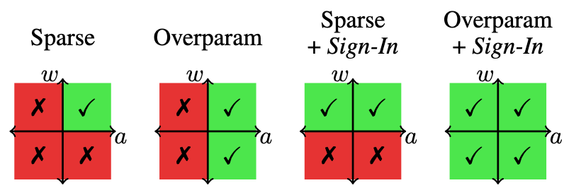
-
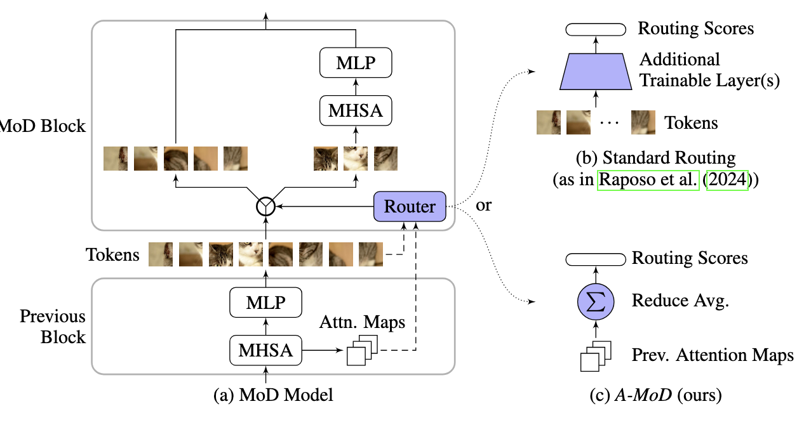
SCOPE Workshop (ICLR 2025)
2024
-
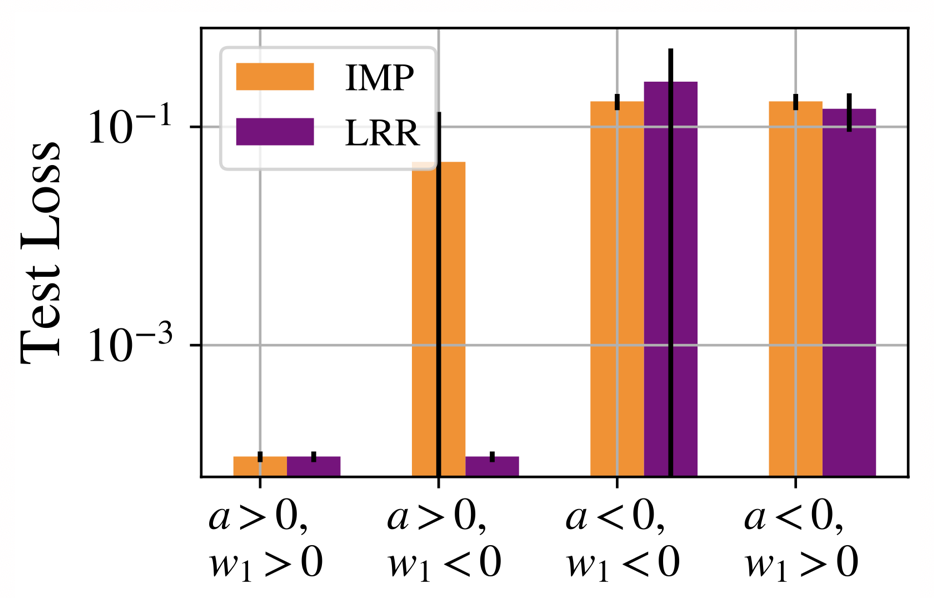
ICLR 2024 (Spotlight)
2023
-
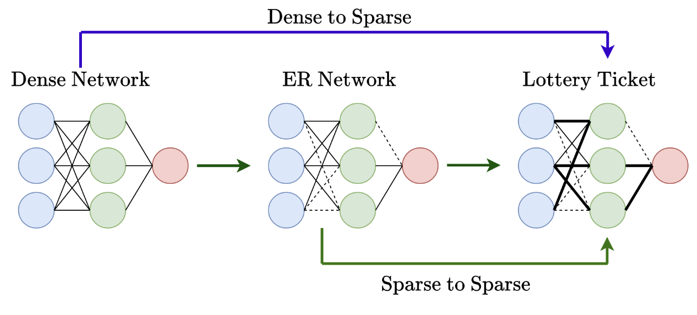
2021
-
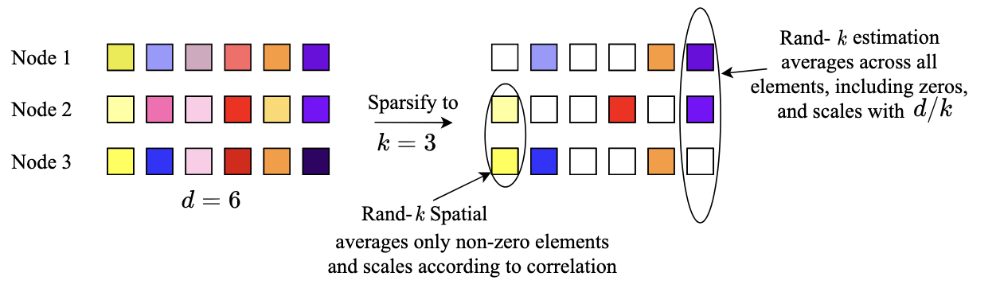
-
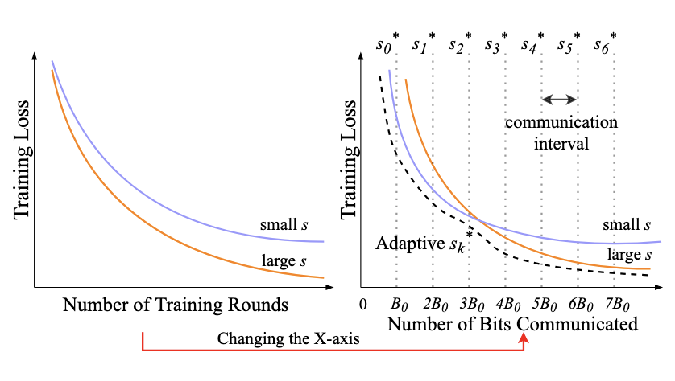
Preprints
-
arXiv, Jun 2024
-
arXiv, Oct 2022
-
arXiv, Oct 2021
-
arXiv, Jul 2021